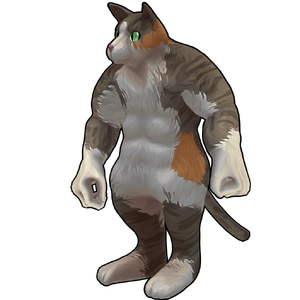

Maxipuss
背景

Maxipuss 是 Milean 心爱的猫，而 Milean 是 Brewsal 著名 Milean Restaurant 的谦逊店主。Maxipuss 的名字来自它对吃老鼠的热爱。很少有人知道 Maxipuss 的真实形态，除了它的主人，以及少数被精选出来的餐厅顾客。大多数惹人厌的顾客离开餐厅时，都会只剩一段模糊的记忆和一身淤青。
策略
Maxipuss 战斗由 1 个阶段组成。
近距离时，Maxipuss 会使用简单的拳击攻击，也会使用开场抓取。
对远距离目标，Maxipuss 可能会投掷毛球或跳跃。
统计
基础 HP：5300
伤害：物理
| 属性 | 抗性 |
|---|---|
| 物理 | 中性 (1x) |
| 火焰 | 中性 (1x) |
| 冰霜 | 弱点 (1.25x) |
| 电击 | 中性 (1x) |
| 光耀 | 抗性 (0.7x) |
| 暗影 | 弱点 (1.3x) |
| 毒 | 中性 (1x) |